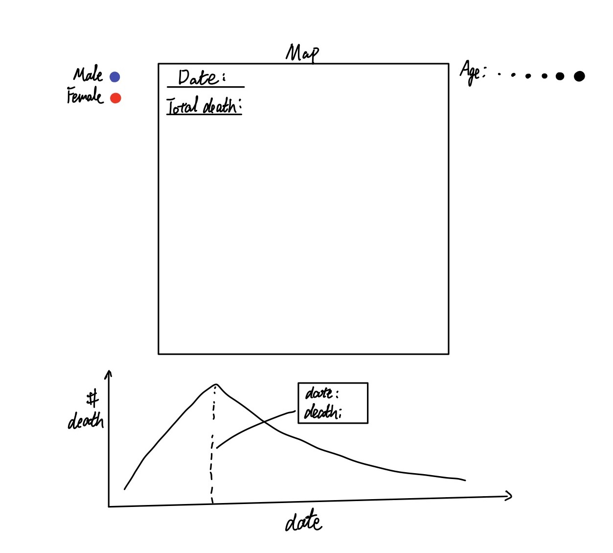

The purpose of the assignment was to reproduce Dr. John Snow's outbreak map as an interactive visualization using JavaScript and the D3 data visualization library.
Dr. John Snow's outbreak map:

The data and codes for this project are available on GitHub as ChengyunIU Visualization_P1.
The first thing that I want is a map, using the street data, with labeled pumps location and street name.
Next, I would like to add death data to the map. The death data should be divided into male and female and also into 6 age groups. I decided to use different collor to distinguish male and female. Instead using 6 different colors for each age group, I think it is better to represent age group by the size of dots.
To show the number of death on each date and also the accumelated number of death, I add a line chart. On the line chart, I would like to show the death on each date. When moving mouse on the X-axis of the line chart, I would like to see the number of death on that date, and death location shoud be updated on the map. At the same time, I would like to present the total number of death. So I decided that I would add the accumulated number of death on the map. 
The line chart was decided to be presented under the map, so when different date is selected on the line chart we can easily see the change on the map.
At last, I created a bar cart to show the number of death in each age group.
I tried different colors to distinguish male and female. Finally, I decided to use orange and blue which are commomly used for the binary categorical variable.
The locations of the deaths are around the location of the Broad Street waterpump. The contaminated water from the Broad Street waterpump was the key source of the epidemics. From the bar chart, we can see that there is no significant difference in the rate of deaths between male and female victims. However, the rate of death is closely related to age. The most vulnerable populations is the very young (0-10) and the very old (> 80) populations. The estimated census data provided by the instructor suggests that only about 1% of the population falls into the > 80 age range. Thus, we may conclude that the older population is the most vulnerable population during the cholera epidemic.